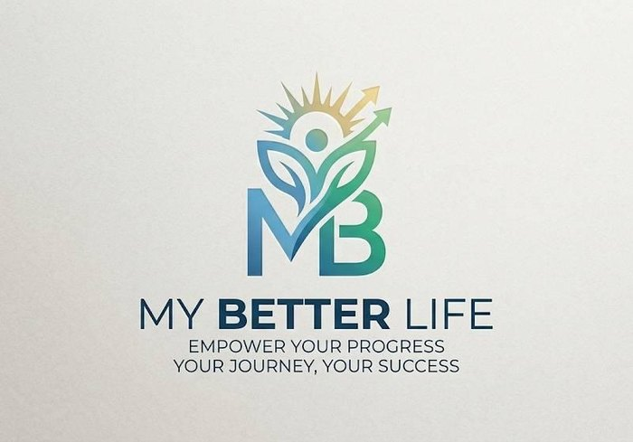
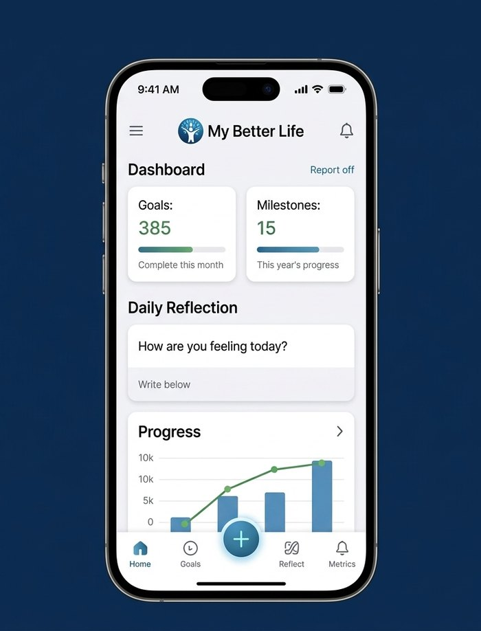
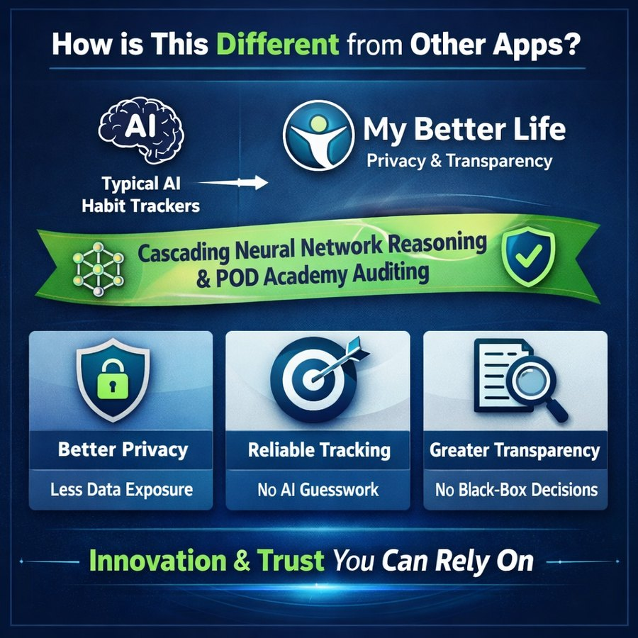
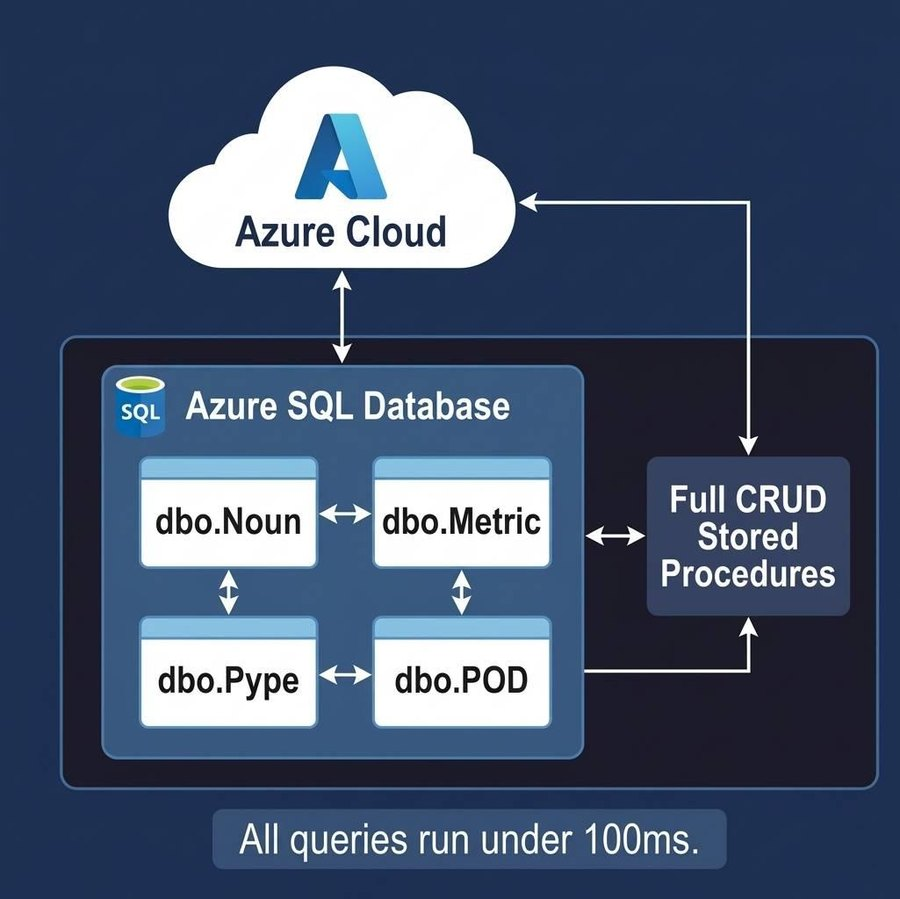

University of Michigan-Dearborn · Senior Design 2026 · AI-Powered Backend Database Engineering
My Better Life: Frequently Asked Questions
From the project handout the team prepared for our Senior Design presentation.
What is My Better Life?
An AI-powered personal development platform that helps users set ambitious goals, break them into actionable milestones, and track progress through weekly cycles and structured reflections.

How is this different from other apps?
Unlike typical habit trackers that rely on generative AI, My Better Life prioritizes privacy, transparency, and structured progress tracking. Instead of sending sensitive user data to external AI systems, it uses cascading neural network reasoning and POD Academy auditing to deliver consistent, controlled insights.
This means:
- Better privacy (less data exposure)
- More reliable tracking (not AI guesswork)
- Greater transparency (no black-box decisions)

How does the AI work?
A cascading neural network processes user interview responses and reflection data to generate personalized recommendations and actionable guidance.
User input data (goals, reflection patterns, challenges, progress metrics) ↓
- Neural Reasoning
- Symmetric Reasoning Auditing
- Contextual Reasoning Auditing
- Controlled Auditing
- Personalized Guidance
What database technology does it use?
Azure-hosted SQL Server with full CRUD stored procedures. This FAQ was written in the first semester, when the team was working with 4 core tables:
- dbo.Noun
- dbo.Metric
- dbo.Pype
- dbo.POD
All queries ran under 100 ms. In the second semester the design grew well beyond these four tables.

Why us? The My Better Life difference (security and privacy focus)
My Better Life is engineered to provide advanced AI support for your personal development without sacrificing your personal data to public generative AI platforms.
| Aspect | Other AI platforms | My Better Life |
|---|---|---|
| Security & Privacy (Data Handling) | Sensitive user data is often sent to external clouds and third-party models (risk of leaks and usage for training). | Data is processed and stored internally within a secured Azure-hosted backend. No data is sent to external, untrusted systems. Total user control. |
| Reliability & Customization (Outputs) | Rely on large, black-box models trained on general internet data. Outputs can be inconsistent, or hallucinatory (not grounded in your data). | Recommendations are tailored to your unique goals and progress. Uses grounded reasoning based on structured user data. Consistent and verifiable. |
| Transparency (Process Owner) | AI dictates reasoning based on generic web data. Decisions are opaque. How advice is reached is often unexplainable. | User-led growth (setting goals, weekly reflections). AI supports the user within an understandable framework. Referencing POD Academy auditing and explicit data points. |
These are the team's design goals and claims from our Senior Design handout. The project was built for an external client, so the code is client-owned. See the project overview and the Senior Design poster.